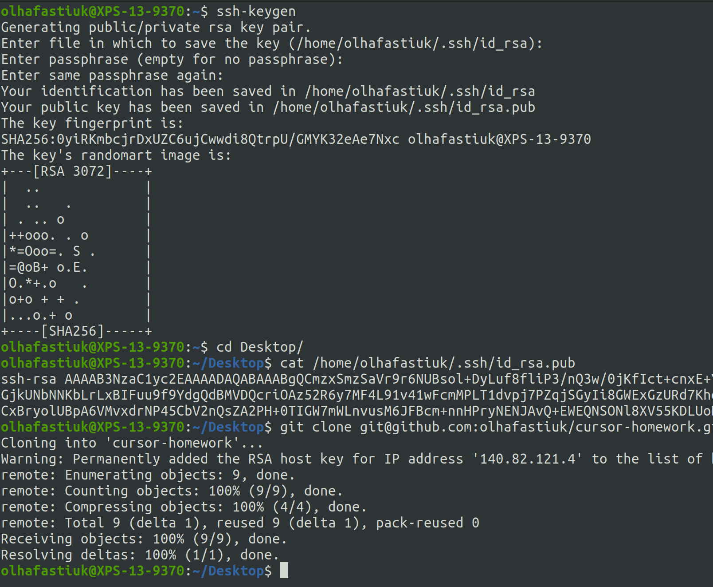

Git cheat list
- git config --global user.name blabla
- Встановлює ім'я, яке буде відображатися в полі "Автор" у ваших комітах
- git config --global user.email blabal@bla
- Встановлює адресу електронної пошти, що буде відображатися в інформації про ваші коміти
- git init
- Cтворює новий локальний репозиторій
- git status
- Перегляд змінених файлів
- git add
- Додає змінені файли в індекс
- git commit
- Зберігання змінених файлів в історію версій
- git log
- Показує історію версій
- git checkout
- Переключає на обрану гілку і оновлює робочу директорію до її стану
- git branch
- Створює нову гілку
- git push
- Відправляє коміти у віддалений репозиторій
- git pull
- Завантажує історію з віддаленого репозиторію та об'єднує її з локальною
- git merge
- Об'єднати гілки
- git clone
- Викачує репозиторій разом з усією історією змін
- git revert
- Команду можна вважати командою типу "скасувати", однак вона не є традиційною операцією скасування. Замість того, щоб видалити коміт з історії проекту, він з'ясовує, як інвертувати зміни, введені комітом, і додає новий коміт із отриманим зворотним змістом.
- git reset
- Скасовує всі коміти після заданого, залишаючи всі зміни в робочій директорії
- git rebase
- Переміщення або об'єднання послідовності комітів до нового базового коміту
- git cherry-pick
- Дозволяє вибрати довільні коміти з гілки та застосувати їх до іншої
- git stash
- Тимчасово зберігає всі незафіксовані зміни відслідковуваних файлів
.gitignore файли- це такі файли, які завжди ігноруються git. Як правило, це файли, які генеруються використовуваними програмами у локальному сховищі, і які не потрібно відправляти у віддалений репозиторій
Підключення через SSH
- Генеруємо ssh-ключ, якщо його немає і відкриваємо
- ssh-keygen
- cat ~/.ssh/id_rsa.pub
- Копіюємо ключ та додаємо його у свій профіль GitHub
- Змінюємо адресу локального репозиторію
- git remote set-url origin <repo-ssh-url>
